The Power of Diffusion Models!
This project explores the practical and creative potential of state-of-the-art diffusion models using the DeepFloyd IF framework. We implemented key components of the diffusion pipeline, including the forward noise process and custom iterative denoising loops, progressing from classical methods to learned denoising with a pretrained UNet. Image quality was further enhanced using Classifier-Free Guidance (CFG), enabling stronger alignment between generated outputs and text prompts.
Building on this foundation, a unified framework was developed for multiple advanced tasks: high-quality image generation from noise, image-to-image translation (SDEdit), and semantic inpainting. These tasks demonstrate how diffusion models can be leveraged for controlled and realistic image manipulation. Beyond standard applications, the pipeline was extended to create visual anagrams and hybrid images, showcasing the model's ability to generate perceptually rich and multi-interpretation visuals.
Overall, this project highlights both the theoretical understanding and practical implementation of diffusion models, emphasizing their versatility for generative modeling, structured editing, and creative visual synthesis.
Setup & Prompt Exploration
We use DeepFloyd IF, a two-stage cascaded diffusion model by Stability AI. Stage I produces 64×64 images; Stage II upsamples to 256×256. The model is text-conditioned: raw text is first encoded into 4096-dimensional prompt embeddings before being fed into the denoising UNet.
All experiments use a fixed random seed of 888 to ensure reproducibility. Prompt embeddings were precomputed and stored in a .pth dictionary.
| Prompt | Used For |
|---|---|
| a high quality photo | Null condition baseline |
| a watercolor painting of a lighthouse in a storm | Experimenting with different prompts |
| a macro photograph of a butterfly wing | Experimenting with different prompts |
| a cyberpunk city street at night with neon lights | Experimenting with different prompts |
| ancient wizard tower, fantasy, glowing runes, misty environment, detailed textures | Text-conditioned img2img |
| Statue of Liberty, realistic, cinematic lighting | Text-conditioned img2img |
| British queen on a royal throne, holding a sceptre, regal attire, crown, ornate palace setting, dramatic lighting, ultra detailed, photorealistic | Text-conditioned img2img |
| an oil painting of a sleeping bear | Used for visual anagram |
| an oil painting of a mountain range | Used for visual anagram |
| a pencil sketch of an owl perched on a branch | Used for visual anagram |
| a pencil sketch of a sailing ship on the ocean | Used for visual anagram |
| a lithograph of a human skull | Used for hybrid image |
| a lithograph of a forest of pine trees | Used for hybrid image |
| a photo of a yin yang | Used for hybrid image |
| a photo of Rome | Used for hybrid image |
Generated Images (3 Selected Prompts)
Below are sample outputs generated directly from DeepFloyd at two different inference step counts, demonstrating how generation quality improves with more denoising steps.
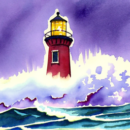
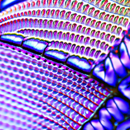
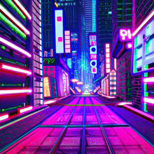
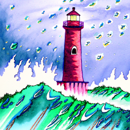
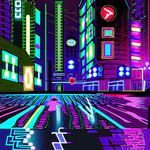
With steps=20, images are plausible but can appear slightly blurry or over-smoothed. Increasing to steps=100 yields sharper textures and better prompt alignment.
Implementing the Forward Process
The diffusion forward process adds Gaussian noise to a clean image according to noise schedule coefficients ᾱt. At t=0 the image is clean; at t=T=1000 it is pure noise.
That is, given a clean image x0 ,we get a noisy image xt at timestep t by sampling from a Gaussian with mean √ᾱtx0 and variance (1 − ᾱt) .The Campanile test image (resized to 64×64) is noised at three timesteps t ∈ {250, 500, 750}, showing progressively more signal destruction as ᾱt decreases from ~0.9 toward ~0.1.
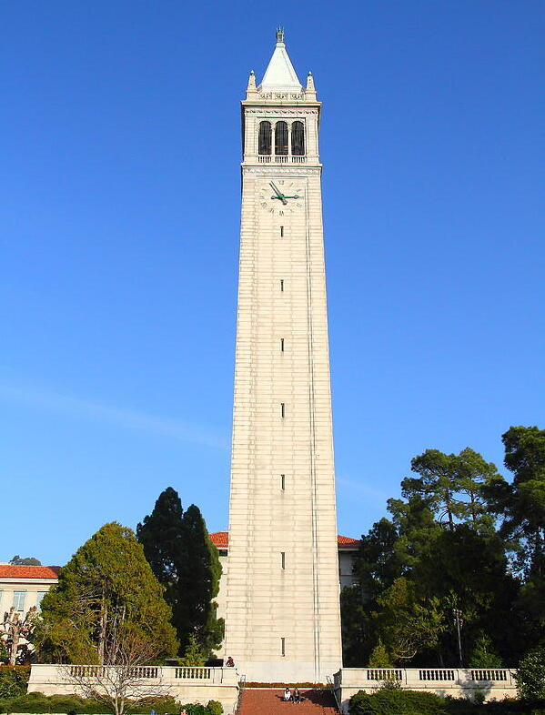
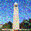
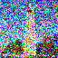
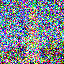
At t=250, the Campanile silhouette remains clearly visible with some color noise. At t=500, the structure is blurred and partially overwhelmed by noise. At t=750, the original image is nearly indistinguishable. The forward process has almost fully destroyed the signal, leaving only spectral traces.
Classical Denoising
Gaussian blur filtering is applied as a classical denoising baseline. While it smooths high-frequency noise, it cannot recover the true underlying signal, especially at high noise levels, because it has no model of the image manifold.
Noisy vs. Gaussian Blur Denoised
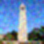
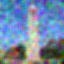
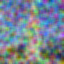
Gaussian blur removes high-frequency noise but produces a blurry, washed-out result at all noise levels. At t=500 and t=750, the "denoised" images are practically unrecognizable. This demonstrates the fundamental limitation of frequency-domain methods that lack semantic priors.
One-Step Denoising with a UNet
Instead of classical filtering, we leverage the pretrained stage_1.unet to estimate and subtract the noise. The UNet has learned a rich prior over natural images and can make much more informed denoising decisions.
Given noisy image xt and timestep t, the UNet outputs a 6-channel tensor. The first 3 channels give the predicted noise ε̂. We recover x̂0 via the inverse of the forward equation.
At t=250, one-step denoising nearly recovers the original image. At t=500 the result is still recognizable but shows hallucinated details. At t=750, the single-step estimate diverges significantly and the problem is too ill-posed for a single network pass to solve reliably. This motivates iterative denoising.
Iterative Denoising
Rather than denoising in a single step (requiring 1000 UNet passes to go from xT to x0), we use a strided timestep schedule starting at t=990, stepping by 30, down to t=0, giving 33 total steps. At each step we use the DDPM update rule:
where:
• xt is your image at timestep t
• xt' is your image at timestep t' where t' < t (less noisy)
• ᾱt is defined by alphas_cumprod (array of hyperparameters)
• αt = ᾱt/ᾱt'
• βt = 1 − αt
• x0 is our current estimate of the clean image using one-step denoising
• vσ is a predicted variance term
Denoising Loop (every 5th step)
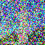
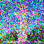
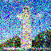
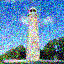
Final Comparison
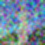
Iterative denoising dramatically outperforms both single-step and Gaussian methods. The gradual refinement allows the model to progressively hallucinate coherent structure. The result is sharp, semantically meaningful, and closely resembles the original.
Diffusion Model Sampling
By starting the iterative denoising loop from pure Gaussian noise (i_start=0) instead of a real noisy image, we can generate entirely new images from scratch. This is the core generative capability of diffusion models.
Five samples were generated using the prompt "a high quality photo":
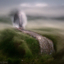
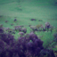
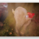
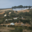
Without classifier-free guidance, the null-conditioned generations are valid images but lack sharpness and coherence. Some samples are clearly recognizable (portraits, landscapes) while others are semi-abstract. Quality will be substantially improved in Part 1.6 with CFG.
Classifier-Free Guidance (CFG)
CFG dramatically improves sample quality by amplifying the difference between conditional(εc) and unconditional(εu) noise estimates. The combined noise estimate is:
Here, γ controls the strength of CFGWith γ=0 we recover the unconditional estimate; with γ=1 the conditional. For γ > 1 (we use γ=7), the model over-commits to the condition, trading diversity for quality. The unconditional estimate uses the empty string prompt embedding.
The improvement with CFG is striking. Images are sharper, better-lit, and more semantically coherent. The trade-off is reduced diversity. All samples have a more "photographic" quality rather than the varied, sometimes abstract outputs of unconditioned sampling.
Image-to-Image Translation (SDEdit)
By adding a small amount of noise to an existing image and then running the iterative denoising loop with CFG, we can "edit" images in a manner guided by the model's learned prior. The starting index i_start controls the strength of the edit, larger values allow more deviation from the original.
This implements the SDEdit algorithm: noising to timestep t[i_start], then denoising back to t=0 with the conditional text prompt "a high quality photo" on the Campanile image followed by 2 custom images.
Campanile SDEdit
Prompt: "a high quality photo" · CFG γ=7
Custom Image 1 (artemis.jpg)
Custom Image 2 (cube.jpg)
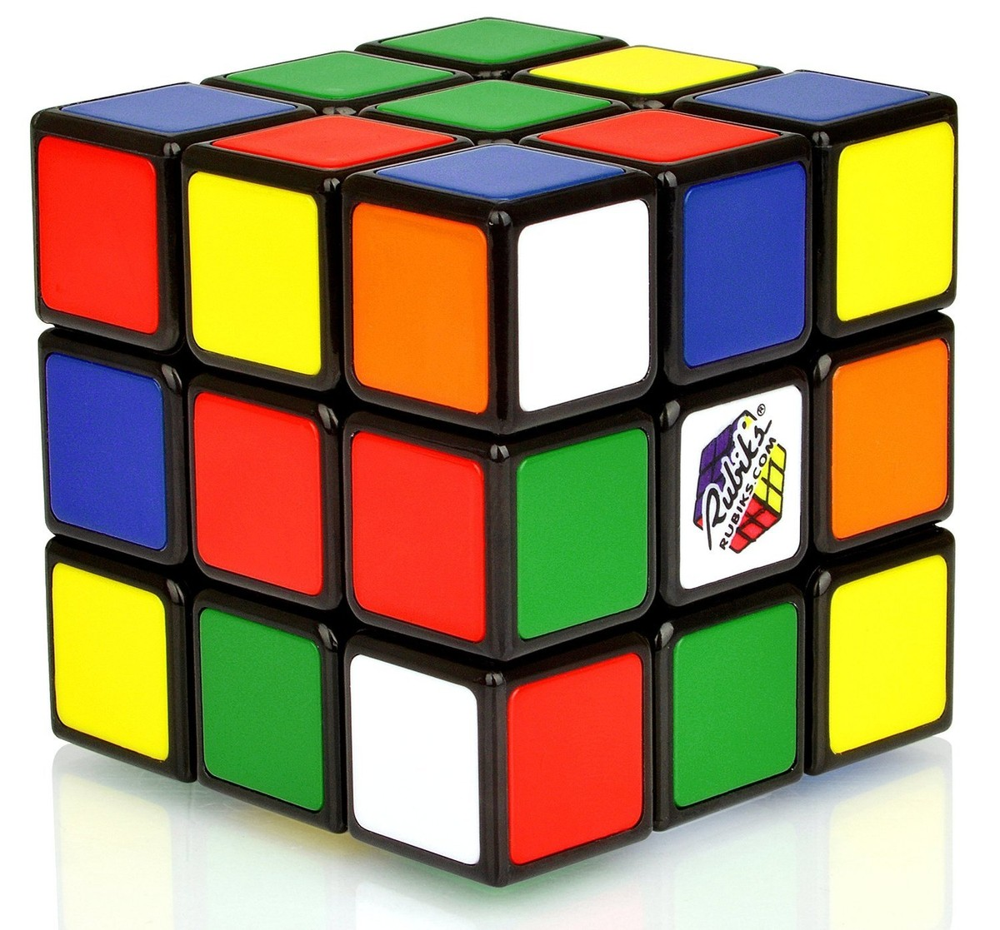
At i_start=1-3, the edit is minimal with essentially no change. As i_start increases toward 20, the model gains freedom to reinterpret the content: colors shift, textures transform, and at i_start=20 the result may diverge significantly from the original while retaining the broad compositional structure.
Editing Hand-Drawn & Web Images
SDEdit works especially well on non-photorealistic inputs. A hand-drawn or web-sourced image is first projected into the latent noise space, then denoised using the learned prior. The model "interprets" the rough sketch through the lens of its training distribution.
Web Image (Tree Drawing)

Hand-Drawn Image 1
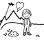
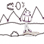
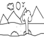
Hand-Drawn Image 2
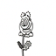
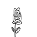
Inpainting
Inpainting fills a masked region of an image with plausible content. At each denoising step, pixels outside the mask(1-m) are anchored to the original image(xorig) with the appropriate noise level, while pixels inside the mask(m) are generated freely(xt). This implements the RePaint algorithm.
Campanile Inpainting


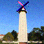
Custom Inpainting 1 (artemis)
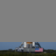
Custom Inpainting 2 (alma)
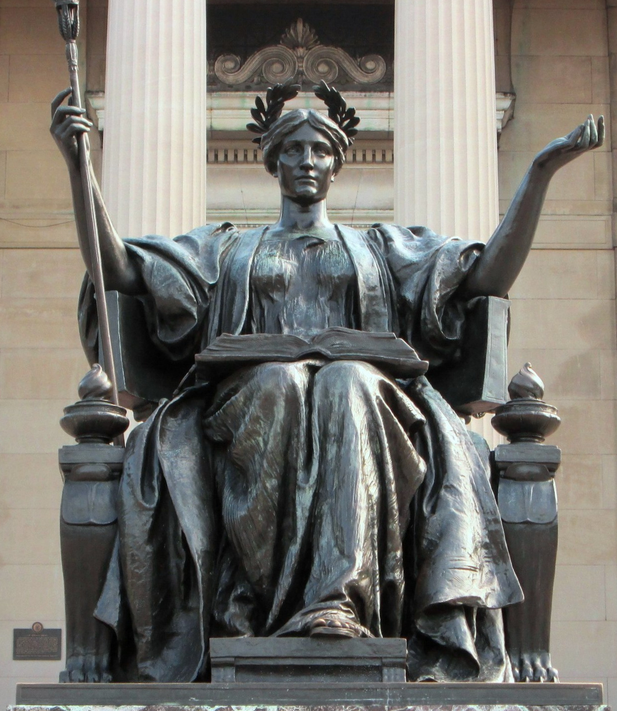

The inpainted regions blend naturally with the rest of the image. The model correctly reasons about context and the surroundings constrain what kind of content fills the hole, producing semantically coherent fills even for large masked regions. Multiple were needed to avoid artifacts since the model was not specifically trained for this task.
Text-Conditional Image-to-Image Translation
Extending SDEdit with a non-generic text condition allows us to stylistically transform an image. Instead of "a high quality photo", we supply a descriptive or creative prompt, directing the denoising process toward a target visual style or subject.
Campanile → Statue of Liberty
Prompt: "Statue of Liberty, realistic, detailed stone texture, standing on pedestal, dramatic sky, cinematic lighting, high detail"
Custom Image 1 → Ancient Wizard Tower
Prompt: "ancient wizard tower, fantasy, glowing runes, misty environment, detailed textures"
Custom Image 2 → British Queen
Prompt: "British queen on a royal throne, holding a sceptre, regal attire, crown, ornate palace setting, dramatic lighting, ultra detailed, photorealistic"
At low noise levels, the original composition is preserved but texture/style shifts subtly toward the prompt. At higher noise levels the model takes creative liberties and reinterprets shapes and subjects according to the text. The tension between fidelity and creativity makes this a powerful, controllable editing tool.
Visual Anagrams
Visual anagrams are images that reveal different subjects depending on orientation. We achieve this by computing two CFG noise estimates simultaneously at each denoising step, one for the upright image and one for the flipped image, then averaging them after unflipping:
ε₁ = CFG of UNet(xₜ, t, p₁) // upright condition
ε₂ = flip(CFG of UNet(flip(xₜ), t, p₂)) // flipped condition
ε = (ε₁ + ε₂) / 2 // averaged noise estimate
Illusion 1: Mountain Range ↔ Sleeping Bear
p₁ = "an oil painting of a mountain range"
p₂ = "an oil painting of a sleeping bear"
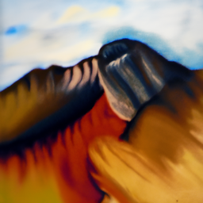
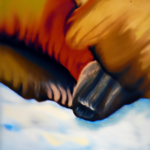
Illusion 2: Owl ↔ Sailing Ship
p₁ = "a pencil sketch of an owl perched on a branch"
p₂ = "a pencil sketch of a sailing ship on the ocean"
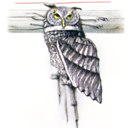
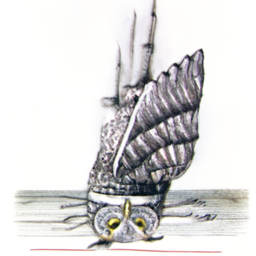
The visual anagram technique works because both noise estimates compete to shape the same frequency-rich image structure. The model converges on compositions that simultaneously satisfy both orientations by exploiting ambiguous shapes that read differently when rotated. Multiple generation attempts were needed to find a particularly convincing result.
Hybrid Images
Hybrid images encode two different subjects into distinct spatial frequency bands. One subject dominates at low frequencies (visible from afar) and another at high frequencies (visible up close). We implement this via Factorized Diffusion: two CFG noise estimates are combined by splitting their frequency content.
ε₁ = CFG of UNet(xₜ, t, p₁) // low-freq condition
ε₂ = CFG of UNet(xₜ, t, p₂) // high-freq condition
ε = f_lowpass(ε₁) + f_highpass(ε₂) // gaussian blur, σ=2, k=33
Hybrid Image 1: Skull ↔ Forest
p₁ = "a lithograph of a human skull" (low freq)
p₂ = "a lithograph of a forest of pine trees" (high freq)
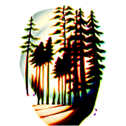
Hybrid Image 2: Yin-Yang ↔ Rome
p₁ = "a photo of a yin yang" (low freq)
p₂ = "a photo of Rome" (high freq)
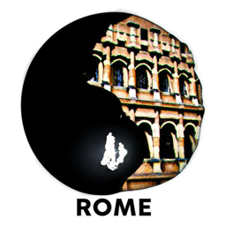
The hybrid images exploit the visual system's multi-scale processing: squinting or viewing from a distance smooths out high-frequency details, revealing only the low-frequency subject. Up close, the high-frequency textures and edges dominate perception. The technique works best with prompts that produce complementary spatial statistics (e.g., a bold geometric form vs. a textured scene).
Flow Matching from Scratch!